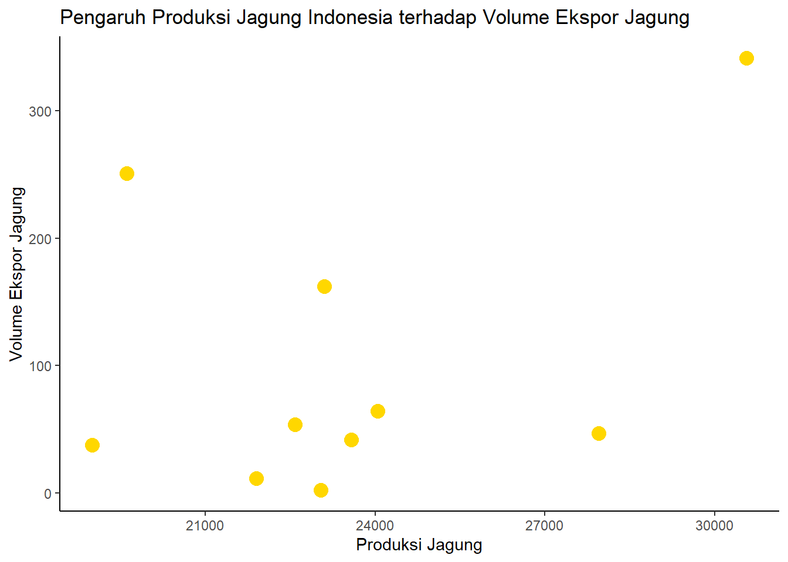

library('tidyverse')
library('readxl')
library('dplyr')Pengaruh Produksi Jagung Indonesia Terhadap Volume Ekspor Jagung Tahun 2013-2022
Metode Penelitian Politeknik APP Jakarta

1 Pendahuluan
1.1 Latar belakang
Indonesia adalah salah satu negara yang dikenal sebagai negara agraris di dunia. Indonesia sudah terkenal akan produksi agrarisnya, terutama pada komoditas jagung. Jagung merupakan salah satu komoditas pertanian utama di Indonesia dan memiliki peran penting dalam perekonomian negara. Selain itu, jagung juga menjadi komoditas ekspor yang penting bagi Indonesia.
Penting untuk memahami bahwa jagung memiliki peran strategis dalam keberlanjutan sektor pertanian dan perekonomian nasional. Oleh karena itu, penelitian mengenai pengaruh produksi jagung terhadap volume ekspor jagung di Indonesia menjadi relevan untuk memahami dinamika pasar dan mencari strategi yang tepat untuk meningkatkan kontribusi jagung sebagai komoditas ekspor.
Penelitian ini akan mencoba mengeksplorasi hubungan antara produksi jagung di Indonesia dengan volume ekspor jagung. Produksi jagung yang tinggi seharusnya dapat menciptakan peluang untuk meningkatkan ekspor, tetapi faktor-faktor seperti kebijakan pemerintah, kualitas produk, dan persaingan global dapat mempengaruhi sejauh mana jagung Indonesia dapat mengekspansi pasar internasional.
1.2 Ruang lingkup
Penulis mengambil objek penelitian yang akan digunakan sebagai variabel penelitian dari Data Badan Pusat Statistik dan Kementerian Pertanian. Penelitian ini berfokus pada analisis hubungan antara Produksi Jagung dan Volume Ekspor Indonesia tahun 2013-2022. Ruang lingkup penelitian ini mencakup data Volume Ekspor Jagung Indonesia serta Data Produksi Jagung selama sepuluh tahun.Variabel yang penulis gunakan adalah Volume Ekspor Jagung Indonesia sebagai Variabel Dependen dan Volume Produksi Jagung Indonesia sebagai Variabel Independen.
1.3 Rumusan masalah
Berdasarkan penjelasan tersebut maka pokok masalah penelitian ini adalah:
- Apakah ada pengaruh signifikan antara Volume Produksi Jagung terhadap Volume Ekspor Jagung Indonesia tahun 2013-2022?
- Bagaimana hubungan antara Volume Produksi Jagung terhadap Volume Ekspor Jagung Indonesia tahun 2013-2022?
1.4 Tujuan dan manfaat penelitian
Tujuan dari penelitian ini adalah untuk menganalisis hubungan antara Volume Produksi Jagung dan Volume Ekspor Jagung Indonesia. Dengan menggunakan metode uji regresi, penelitian ini bertujuan untuk menentukan sejauh mana produksi jagung mempengaruhi ekspor.
Adapun manfaat penelitian ini adalah:
Pengembangan Kebijakan: Hasil penelitian ini dapat memberikan dasar yang kuat untuk pengembangan kebijakan pertanian dan perdagangan yang mendukung pertumbuhan produksi jagung dan peningkatan volume ekspor. Pemerintah dapat menggunakan temuan ini untuk merancang kebijakan yang mendukung daya saing jagung Indonesia di pasar global.
Pemberdayaan Petani: Penelitian ini dapat memberikan informasi yang berguna kepada petani jagung, memungkinkan mereka untuk mengambil keputusan yang lebih baik terkait varietas yang akan ditanam, teknologi pertanian yang digunakan, dan strategi manajemen risiko. Peningkatan produksi dan ekspor jagung dapat memberikan dampak positif pada pendapatan petani.
Peningkatan Daya Saing: Dengan pemahaman yang lebih baik tentang faktor-faktor yang mempengaruhi volume ekspor jagung, pelaku industri dapat mengidentifikasi peluang untuk meningkatkan daya saing produk jagung Indonesia. Hal ini dapat mencakup peningkatan kualitas, diversifikasi produk, dan pengembangan strategi pemasaran yang lebih efektif.
1.5 Package
Packages yang digunakan antara lain sebagai berikut:
2 Studi pustaka
- Ekspor
Ekspor merupakan proses perdagangan internasional yang dilakukan oleh individu, perusahaan, atau lembaga dengan tujuan untuk melakukan pertukaran barang antar negara. Definisi ini sejalan dengan ketentuan Undang-undang Kepabeanan Pasal 1 ayat 14, yang menyatakan bahwa pemerintah berupaya meningkatkan cadangan devisa melalui pengembangan arus ekspor. Oleh karena itu, pemerintah memberikan himbauan agar proses ekspor barang dari Indonesia dapat berjalan lancar tanpa harus melalui pemeriksaan fisik, kecuali jika ada kebutuhan tertentu untuk melakukan pemeriksaan barang ekspor (Pabean, 2017).
Selanjutnya, menurut Peraturan Pemerintah Republik Indonesia Nomor 2 tahun 2009, ekspor didefinisikan sebagai kegiatan pengeluaran barang dari daerah pabean. Daerah pabean mencakup wilayah Republik Indonesia, termasuk wilayah darat, perairan, dan ruang udara di atasnya, serta tempat-tempat tertentu di Zona Ekonomi Eksklusif dan landas kontinen. Seluruh proses ekspor harus mematuhi ketentuan dan peraturan yang berlaku sesuai dengan peraturan pemerintah.
- Produksi
Produksi adalah suatu proses untuk mengubah input menjadi output yang akan menambah nilai guna suatu barang. Menurut (Mubyarto, 1986) produksi merupakan hasil yang diperoleh petani dari hasil pengolahan atau pengelolaan usaha tani-nya, besar kecilnya keuntungan yang diperoleh petani diperhitungkan dari produksi.
Terdapat tiga aspek proses produksi antara lain :
- Kuantitas barang atau jasa yang dihasilkan
- Bentuk barang atau jasa diciptakan
- Distribusi temporal dan spasial dari barang dan jasa yang dihasilkan
3 Metode penelitian
3.1 Data
Berikut adalah data yang saya gunakan dalam penelitian ini, data berikut merupakan data Volume Ekspor Jagung Indonesia dan Produksi Jagung Indonesia tahun 2013-2022.
| TAHUN | PRODUKSI JAGUNG (Ton) | VOLUME EKSPOR JAGUNG (Ton) |
|---|---|---|
| 2013 | 21.903.00 | 11.418 |
| 2014 | 19.008.000 | 37.889 |
| 2015 | 19.612.000 | 250.831 |
| 2016 | 23.578.000 | 41.875 |
| 2017 | 27.950.000 | 47.002 |
| 2018 | 30.560.000 | 341.523 |
| 2019 | 22.590.000 | 53.566 |
| 2020 | 24.050.000 | 64.272 |
| 2021 | 23.040.000 | 2.539 |
| 2022 | 23.100.000 | 162.033 |
Sumber data: Kementerian Pertanian dan Badan Pusat Statistik Indonesia


Berdasarkan data Badan Pusat Statistik (BPS), ekspor jagung di Indonesia mengalami peningkatan yang signifikan pada tahun 2022. Volume ekspor jagung pada tahun 2022 mencapai 162.033 ton, naik drastis dari tahun sebelumnya yang hanya 2.539 ton. Nilai ekspor jagung juga meningkat pesat, dari USD 0,77 juta menjadi USD 49,95 juta.
Peningkatan ekspor jagung ini disebabkan oleh beberapa faktor, antara lain:
- Kenaikan harga jagung dunia, yang mendorong para eksportir Indonesia untuk meningkatkan produksi dan ekspornya.
- Permintaan jagung yang tinggi dari beberapa negara tujuan ekspor, seperti Tiongkok, Vietnam, dan Filipina.
- Pemerintah Indonesia yang memberikan subsidi kepada petani jagung, sehingga meningkatkan produktivitas dan produksi jagung.
Peningkatan ekspor jagung ini memberikan dampak positif bagi perekonomian Indonesia, antara lain:
- Meningkatkan pendapatan petani jagung dan pelaku usaha di sektor pertanian.
- Meningkatkan devisa negara.
- Memperkuat posisi Indonesia sebagai salah satu produsen jagung di dunia.
Pada tahun 2023, ekspor jagung di Indonesia diperkirakan akan kembali mengalami peningkatan. Hal ini disebabkan oleh tingginya permintaan jagung dunia, serta adanya dukungan dari pemerintah untuk meningkatkan produksi jagung di Indonesia.
3.2 Import Data
Penelitian ini menggunakan data Volume Ekspor Jagung Indonesia sebagai Variabel Dependen dan Volume Produksi Jagung Indonesia sebagai Variabel Independen.
#Baca Data
library('readxl')
#Baca data
dat<-read_excel("C:/Users/yusri/Documents/uasrp/jagung.xlsx")
head(dat)# A tibble: 6 × 3
Tahun Produksi EksporJagung
<dbl> <dbl> <dbl>
1 2013 21903 11.4
2 2014 19008 37.9
3 2015 19612 251.
4 2016 23578 41.9
5 2017 27950 47.0
6 2018 30560 342. 3.3 Plot
#Plot Error
reg1<-lm(EksporJagung~Produksi,data=dat)
#Membuat Error
dat$u<-resid(reg1)
#Plot Error
plot(dat$EksporJagung,dat$u,xlab="Produksi Jagung",ylab="Ekspor Jagung")
abline(h=0)#Plot ggplot
ggplot(data=dat, aes(x = Produksi, y = EksporJagung)) +
geom_point(color="gold",size=4) +
labs(x = "Produksi Jagung", y = "Volume Ekspor Jagung",
title = "Pengaruh Produksi Jagung Indonesia terhadap Volume Ekspor Jagung") +
theme_classic()

3.4 Metode analisis
Metode yang dipilih adalah regresi univariat atau Ordinary Least Square (OLS) dengan 1 variabel independen. Penelitian ini bertujuan untuk mencari Pengaruh Produksi Jagung Indonesia terhadap Volume Ekspor Jagung. Spesifikasi yang dilakukan adalah:
\[ y_{t}=\beta_0 + \beta_1 x_t+\mu_t \] di mana \(y_t\) adalah Volume Ekspor Jagung dan \(x_t\) adalah Volume Produksi Jagung.
4 Pembahasan
4.1 Pembahasan masalah
Untuk menemukan hubungan antara Produksi Jagung dan Volume Ekspor Jagung Indonesia di tahun 2013-2022, saya menggunakan OLS Sehingga didapat hasil seperti tabel berikut:
| Variable | Coefficient | Std. error | t-value | Prob(.) |
|---|---|---|---|---|
| Intercept | -188.32840 | 253.59122 | -0.743 | 0.479 |
| Produksi Jagung | 0.01230 | 0.01067 | 1.153 | 0.282 |
| R Squared | 0.1426 | |||
| Adjusted R Squared | 0.03537 | |||
| F Statistic | 1.33 | |||
| Prob (F-Statistic) | 0.2821 |
Hasil Regresi tersebut dimasukkan ke dalam rumus persamaan sehingga: \[ y_{t}= -188.33 + 0.012X + \mu_t \] Dari persamaan tersebut, kita bisa menyimpulkan bahwa jika produksi Jagung Indonesia naik 1 ribu ton, Maka Volume Ekspor akan naik sebesar 0,012 ribu ton.
4.2 Analisis masalah
#Model
reg1<-lm(EksporJagung~Produksi,data=dat)
#Interpretasi
summary(reg1)
Call:
lm(formula = EksporJagung ~ Produksi, data = dat)
Residuals:
Min 1Q Median 3Q Max
-108.56 -67.28 -39.68 47.69 197.85
Coefficients:
Estimate Std. Error t value Pr(>|t|)
(Intercept) -188.32840 253.59122 -0.743 0.479
Produksi 0.01230 0.01067 1.153 0.282
Residual standard error: 111.4 on 8 degrees of freedom
Multiple R-squared: 0.1426, Adjusted R-squared: 0.03537
F-statistic: 1.33 on 1 and 8 DF, p-value: 0.28215 Kesimpulan
- Koefisien Regresi: Koefisien regresi untuk variabel Produksi adalah 0.01230. Ini berarti bahwa untuk setiap peningkatan satu unit dalam produksi jagung, kita dapat mengharapkan peningkatan sebesar 0.01230 unit dalam volume ekspor jagung, asumsi variabel lain tetap.
- Signifikansi Statistik: Nilai p untuk variabel Produksi adalah 0.282, yang lebih besar dari ambang batas umum 0.05. Ini menunjukkan bahwa produksi jagung tidak memiliki pengaruh yang signifikan terhadap volume ekspor jagung di Indonesia pada tingkat kepercayaan 95%.
- R-squared: Nilai R-squared adalah 0.1426, yang berarti bahwa model ini menjelaskan sekitar 14.26% variasi dalam volume ekspor jagung. Nilai ini cukup rendah, menunjukkan bahwa model ini mungkin tidak menjelaskan variasi dalam volume ekspor jagung dengan baik
- Residuals: Residuals adalah perbedaan antara nilai yang diamati dan nilai yang diprediksi oleh model. Dalam hal ini, residuals berkisar antara -108.56 dan 197.85, menunjukkan bahwa model ini memiliki beberapa kesalahan prediksi yang cukup besar.
Secara keseluruhan, hasil ini menunjukkan bahwa, berdasarkan data yang digunakan dalam analisis ini, produksi jagung tampaknya tidak memiliki pengaruh yang signifikan terhadap volume ekspor jagung di Indonesia. Namun, perlu diingat bahwa ini adalah hasil dari satu analisis dan mungkin perlu penelitian lebih lanjut untuk konfirmasi
6 Referensi
Adhi Susanto, S.P., M.Si., dan Dwi Setyowati, S.P., M.Si. (2023). “Jurnal Ilmiah Pertanian Tropika.” Potensi dan Strategi Peningkatan Ekspor Jagung Indonesia vol 22, No 1.
Kinastri, Rurry Garnish and , Ir. Maulidyah Indira Hasmarini, M.Si. (2019). Analisis Ekspor Jagung di Indonesia dan Faktor-Faktor Yang Mempengaruhinya.
M.S. Amir (2000). Ekspor Impor Teori dan Penerapannya. PPm. Jakarta. Hal 2.
Nurmayasari, Agus hudoyo dan Indah. 2019. PENINGKATAN PRODUKTIVITAS JAGUNG DI INDONESIA Vol 1, No 2.
Pusat Data dan Sistem Informasi Pertanian Sekretariat Jenderal Kementerian Pertanian (2020), Analisis Kinerja Perdagangan Jagung, 10(1b).